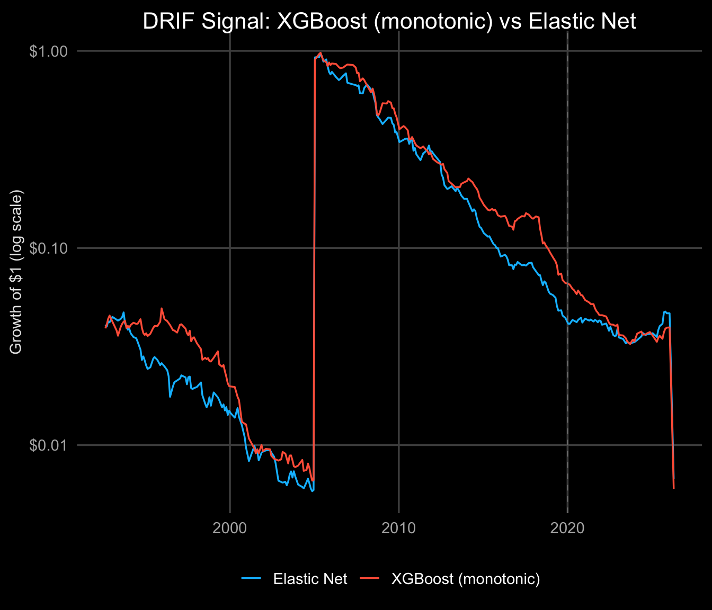
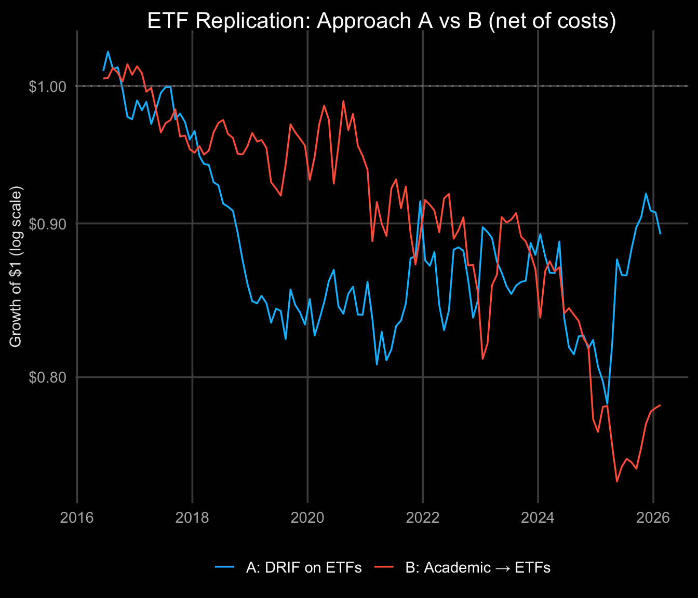

Stock-Level Backtests
WarningSurvivorship bias
⚠ Survivorship-biased universe. stk_universe now restricts to the top-100 tickers by current market cap (#150 Option C) to limit forward survivorship exposure. Historical backtest results remain survivorship-biased — delisted firms (Lehman, Bear Stearns, Enron, WorldCom, old GM, etc.) were never in the dataset and cannot be reconstructed without point-in-time membership data. Literature estimates residual bias at +1 to +3 pp/year for long-only US equity. See issue #150 for remediation status (Option A — point-in-time data — remains open).
Comparison
Row
Summary
Two signals applied at two levels, producing four strategies:
| Signal | Stock-Level (660 stocks, D1-D10) | Factor-Level (5 FF factors, top 2) | |
|---|---|---|---|
| MAX | Highest single-day return in prior month | Stock MAX | Factor MAX |
| DRIF | Elastic net on 42 daily return features | Stock DRIF | Factor DRIF |
Stock-level: Each month, rank all 660 stocks by signal. Long top decile (~38 stocks), short bottom decile. Monthly rebalance. Equal weight within each decile.
Factor-level: Each month, rank 5 Fama-French factors (HML, SMB, RMW, CMA, Mom) by signal. Long top 2. Monthly rebalance. Equal weight.
Equity Curves
Equity curves (4 factor/stock strategies). Growth of $1, log scale, 33 years (1992–2026). Stock-level strategies lose money net of costs: Stock MAX ends at $0.01 (vol 21%), Stock DRIF at ~$0 (vol 19%). Factor-level strategies survive costs: Factor MAX at $1.94 (CAGR 2%, vol 10%), Factor DRIF at $4.98 (CAGR 4.9%, vol 11%). The difference is execution cost, not diversification: stock-level decile sorts produce ~80% monthly turnover across ~130 positions at 0.50%/trade = ~1.85%/month (~22%/yr). Factor-level trades 2–4 positions with ~40% turnover at 0.10%/trade = ~0.16%/month (~2%/yr). Dashed line = test partition start (2020).
Metrics
Key Findings
P&L
| Finding | Evidence |
|---|---|
| Stock MAX full-period CAGR: -16.5% | Vol: 21% — full-period Sharpe: -0.87 |
| Factor DRIF full-period Sharpe: 0.26 | Full-period covers the entire sample including Training. Validation Sharpe: -1.11 |
| Stock DRIF full-period CAGR is only -19.8% | Elastic net regularisation is very aggressive at stock level |
Out-of-Sample / Validation
Warning
Current Validation Sharpe (sealed partition): Stock DRIF: 0.67 | Stock MAX: 0.05 | Factor MAX: -0.84 | Factor DRIF: -1.11. Validation Sharpe values are shown above for each strategy. The Testing partition OOS results (below) reflect the calibration window used during strategy development, not the sealed evaluation.
| Finding | Evidence |
|---|---|
| Stock DRIF showed the strongest Testing-period Sharpe during elastic net development (Testing Sharpe: -0.45) | Validation Sharpe is 0.67 — Validation Sharpe met or exceeded Testing. |
| Factor MAX Testing-period Sharpe: 0.06 | Single-signal approach at factor level; Validation Sharpe: -0.84 |
| Stock MAX OOS CAGR looks extreme (-27%) | Driven by COVID recovery + meme stocks — Validation CAGR: 5.9% |
Risk
| Finding | Evidence |
|---|---|
| Stock-level vol (stock MAX: 21%) vs factor-level vol (factor MAX: 9%) | Compare the two values above — see metrics table for all strategies |
| Stock MAX max drawdown is -100% | Unacceptable for most allocators |
| Factor strategies have drawdowns <36% | Lower risk but lower return |
Robustness
| Finding | Evidence |
|---|---|
| Full daily return distribution (42 features) carries more signal than single-day MAX on paper; whether this advantage persists in the Validation period requires checking the current metrics table | Factor-level Validation Sharpe: -1.11 vs Factor MAX Validation Sharpe: -0.84 |
| Factor-level shows lower volatility than stock-level across all periods | Classic diversification vs concentration tradeoff — confirmed by current metrics table |
Stock MAX
Row
Definition
NoteStrategy: Stock-Level Factor MAX
What: Each month, sort all stocks by the maximum daily return observed in the prior month. Go long the top decile, short the bottom decile.
Rationale (Market Dynamics): A stock with an unusually high single-day return signals that new information arrived — an earnings surprise, an upgrade, a sector rotation. Markets underreact to this information at the individual stock level because:
- Attention limitation — investors can’t monitor 660 stocks daily; extreme returns in small/mid caps go unnoticed
- Anchoring — after a large daily move, investors anchor to the pre-move price, underweighting the new information
- Liquidity friction — the initial move is partially driven by liquidity demand, not fully by information. The price continues to adjust over the following month.
Step-by-step example (one month):
- Collect daily returns for all 660 stocks in March 2024
- For each stock, find the single highest daily return in March (the “MAX”)
- Rank all stocks by MAX: stock with the biggest single-day gain ranks #1
- Divide into 10 deciles (~66 stocks each). D1 = highest MAX, D10 = lowest
- April 2024: go long D1, short D10, equal weight within each decile
- End of April: close all positions, repeat
Performance

Stock-level MAX: D1 long / D10 short, ~38 stocks per decile. Blue = long-short spread, red = long-only (D1). Signal: maximum daily return in prior month. Source: 660 stocks from HuggingFace equity_daily.
Metrics
vs Factor MAX

Stock vs Factor MAX. Stock-level exploits cross-sectional dispersion across 660 stocks. Factor-level rotates among 5 academic factors. Same MAX signal, different universes. Factor-level definition: Factor MAX.
Pros & Cons
| Detail | |
|---|---|
| Pros | Simple signal (one number per stock-month). High raw returns. Works across markets. |
| Cons | Very high volatility (21%). Max drawdown -100%. Sensitive to extreme events. High turnover (~monthly full rebalance). |
| Works well | High-volatility regimes (VIX > 25). Small/mid-cap stocks with less analyst coverage. |
| Works badly | Low-volatility, trending markets where MAX signals are noise. |
| Factor exposure | Loads on size (small-cap tilt in D1), volatility, and short-term reversal. Partially explained by these factors — not pure alpha. |
Stock DRIF
Row
Definition
NoteStrategy: Stock-Level DRIF (Daily Return Information Factor)
What: Each month, use an elastic net regression on the past 21 daily returns (both in chronological order and ranked by magnitude — 42 features total) to predict next-month stock returns. Go long the top decile by predicted return, short the bottom decile.
Rationale (Market Dynamics): The full sequence of daily returns contains more predictive information than any single summary statistic (mean, max, volatility). Specifically:
- Chronological features (c1…c21) capture when returns occurred — recent price pressure and liquidity effects carry more weight than older ones
- Rank features (r1…r21) capture how extreme returns were — behavioral biases cause investors to overweight tail events
- Elastic net combines these 42 features with regularisation, avoiding overfitting while capturing non-obvious interactions
Step-by-step example (one month):
- For each of 660 stocks, collect the 21 daily returns in March 2024
- Create 42 features: c1…c21 (chronological order) + r1…r21 (sorted by magnitude)
- Train elastic net (mixed L1/L2 regularisation, 5-fold CV) on all prior stock-months (expanding window, 60-month minimum)
- Predict each stock’s April return from its March features
- Rank stocks by predicted return. D1 = highest predicted, D10 = lowest
- April: long D1, short D10, equal weight
- End of April: close, repeat
Key distinction from MAX: MAX uses 1 feature (the single highest daily return). DRIF uses 42 features (the full daily return distribution). The Alpha Architect paper shows DRIF subsumes MAX — MAX is a special case of DRIF.
Performance

Stock-level DRIF: pooled elastic net, D1/D10 decile spread. Blue = long-short, red = long-only (D1). Expanding window with 60-month minimum training. Source: 660 stocks, 42 features per stock-month.
Metrics
Pros & Cons
| Detail | |
|---|---|
| Pros (long-only) | Uses full daily return information (42 features ). Elastic net prevents overfitting. During strategy development (Testing period), showed Testing Sharpe of -0.45. |
| Cons | Weak in-sample long-short (-24.4% CAGR). Compute-intensive (10 min for 660 stocks × 600 months). High turnover. Validation Sharpe 0.67 — generalisation to sealed Validation has not held. |
| Works well | When the cross-section is large (more stocks = better elastic net training). Long-only implementation avoids cost drag of short leg. |
| Works badly | Small universes (<100 stocks). Long-short after costs (D1-D10 spread insufficient to overcome 1.85%/month cost). |
| Factor exposure | Lower factor loading than MAX (elastic net regularises out common factors). More likely to represent genuine alpha. |
| OOS > IS anomaly | Possible explanations: universe composition change post-2010, elastic net needs many years to learn, or OOS window (62 months) is too short to be conclusive. |
| Implementation choice | Long-only D1 is the practical strategy — avoids short costs and borrows, captures most of the signal. Long-short shown for comparison but unprofitable after realistic costs. |
References
- DRIF: factor-level implementation — same methodology on 5 FF factors
- Factor MAX — simpler signal, comparison benchmark
- Alpha Architect: Daily Stock Returns — original research
- Alpha Architect: Factor MAX — MAX signal research
XGBoost DRIF
Row
Definition
NoteStrategy: XGBoost DRIF (Monotonic Constraints)
What: Replace elastic net with XGBoost (gradient boosted trees) on the same 42 DRIF features. All features are constrained to be monotonically increasing — higher feature value must always predict higher return.
Hypothesis: XGBoost can capture non-linear relationships (interaction effects, threshold effects) that elastic net misses, while monotonic constraints preserve economic intuition.
Result: XGBoost full-period CAGR: -22.7% vs Elastic Net: -19.8%. The monotonic constraints are likely too restrictive for cross-sectional stock returns where the relationship between daily return features and next-month returns is not universally monotonic.
XGBoost vs Elastic Net

XGBoost (monotonic) vs Elastic Net on same 42 DRIF features, stock-level D1-D10. The XGBoost curve shows occasional extreme monthly spikes — these are months where monotonic constraints force all 42 features into the same direction, creating artificially concentrated decile predictions. The two large jumps likely reflect months where the constrained model’s predictions became highly correlated across stocks, amplifying the D1-D10 spread beyond what the underlying signal supports.
Why It Fails
WarningXGBoost Feature Importance Is Unreliable Here
Feature importance from this model is not shown because it is misleading. With all 42 features forced monotonically increasing and depth=3 trees, XGBoost routes most splits through whichever single feature best separates training data. The result (one feature appearing to explain ~50% of variation) is an artifact of the constraints, not a real finding. Different training windows produce different “dominant” features. The elastic net — which can assign negative coefficients — is better suited for this cross-sectional task.
Metrics
Pros & Cons
| Detail | |
|---|---|
| Pros | Captures non-linear interactions. Monotonic constraints preserve economic intuition. Feature importance is interpretable. |
| Cons | Underperforms elastic net at stock level. Monotonic constraints too restrictive for 42 features. Occasional extreme monthly predictions. Compute-intensive (7+ minutes). |
| Works well | Unknown — does not outperform simpler model in any tested regime. |
| Works badly | Cross-sectional stock prediction where features have non-monotonic relationships with returns. |
| Verdict | Not recommended. Elastic net is simpler, faster, and more accurate for this application. |
ETF Replication
Row
Definition
NoteWhy ETFs?
Stock-level long-short strategies lose ~20%/yr after realistic costs (1.85%/month for 660-stock decile sort). Factor ETFs (VLUE, MTUM, QUAL, etc.) offer institutional liquidity at ~0.20%/month — 10x cheaper.
Two approaches tested:
| A: DRIF on ETF Returns | B: Academic Signal → ETFs | |
|---|---|---|
| Signal | Elastic net on ETF daily prices | Factor-level DRIF (FF5+Mom) mapped to ETFs |
| Execution | Trade the predicted ETFs directly | Map HML→VLUE, Mom→MTUM, etc. |
| Training data | 2013-2026 (ETF inception) | 1963-2026 (academic factors) |
| Key risk | Short history (10 ETFs × 10 years) | Weak mapping (VLUE/HML cor = 0.34) |
Result: Long-short fails for both. Long-only works: 13.4% CAGR (A) and 12.6% CAGR (B). The signal identifies winners, not losers.
Equity Curves

ETF replication: Approach A vs B (long-short, net of costs). Both approaches struggle as long-short because all factor ETFs have positive market beta — shorting one while longing another is mostly a bet on relative factor performance. The long-only legs (not shown) return 13%+ CAGR.
Approach A Metrics
Approach B Metrics
Key Findings
| Finding | Evidence |
|---|---|
| Long-only is the practical strategy | A long-only: 13.4% CAGR. B long-only: 12.6%. Compare S&P 500 ~10%. |
| Short leg is unprofitable | A long-short: -0.8%. B long-short: -1.9%. ETFs all have market beta — shorting one is mostly shorting the market. |
| A > B | Approach A (direct ETF signal) has higher Sharpe (-0.11 vs -0.31) and lower DD (-23.7% vs -29%). See metrics table for factor-mapping details. |
| Cost advantage is real | ETF costs ~0.20%/month vs 1.85%/month stock-level. The long-only gross returns survive after costs. |
| Validation is strong | A long-only Validation CAGR: 20%. B long-only Validation CAGR: 19.8%. Caveat: Validation window overlaps a bull market. |
Details
Row
Universe
660 individual stocks from HuggingFace equity_daily:
| Group | Tickers | History |
|---|---|---|
| S&P 500 (US) | ~500 | 2000-2026 (most), 1962+ (blue chips) |
| STOXX 600 majors (EU) | ~143 | 2000-2026 |
| Factor ETFs | 9 | 2013-2026 |
| Total | ~660 |
Minimum 252 trading days (1 year) to enter universe. Monthly rebalance. ~38 stocks per decile.
Partitions
Build Info
[1] “historicaldata dev | Git 0e2c302 | R 4.5.3 | Built 2026-05-20 12:01:26”